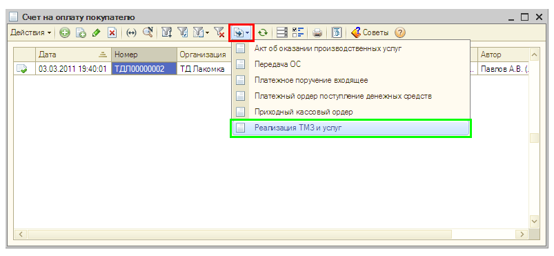
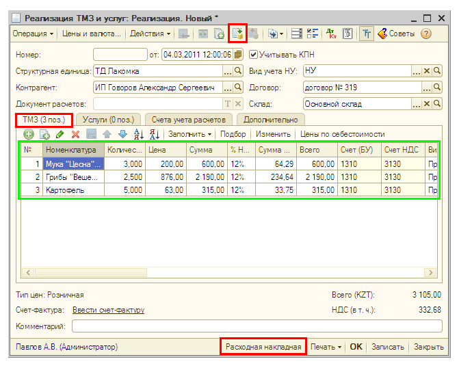
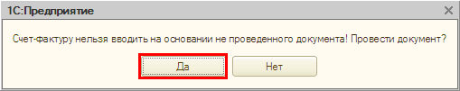
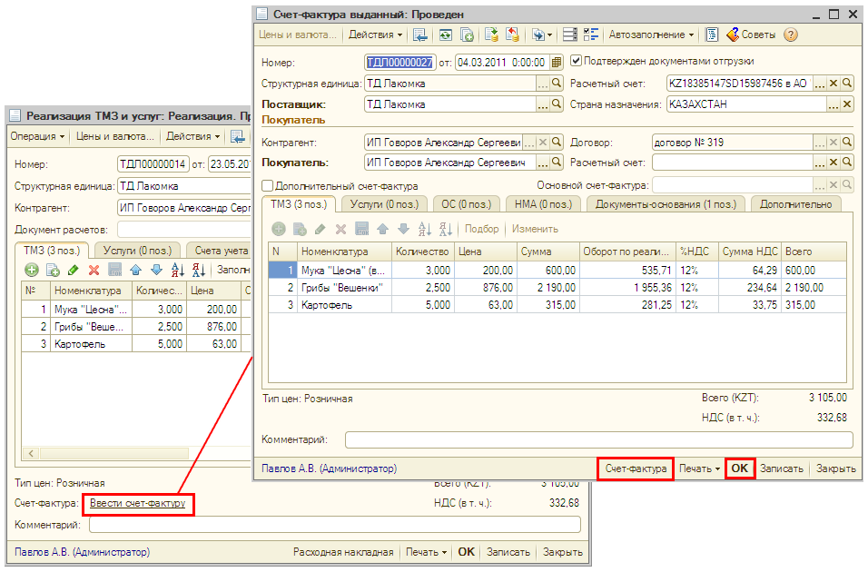
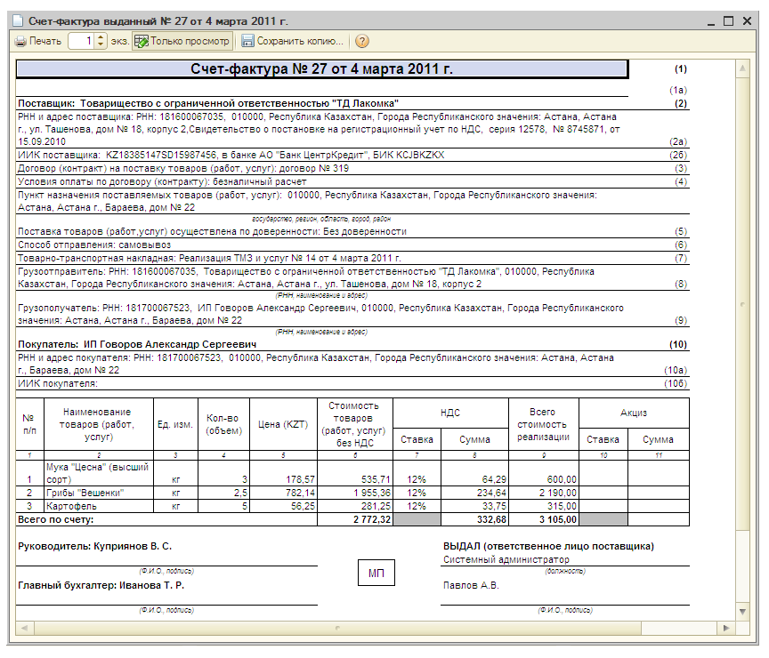
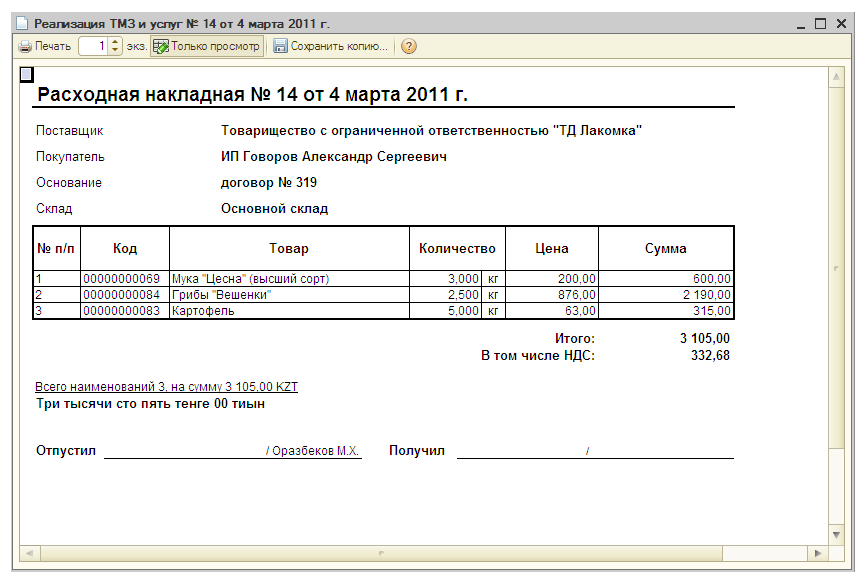

Продажа товаров: накладная и счет-фактура
В «1С:Бухгалтерии 8 для Казахстана» автоматизирован учет операций оптовой, розничной и комиссионной продажи товаров, а также учет операций отгрузки без перехода права собственности. Рассмотрим отражение операций продажи товаров на примере оптовой реализации.
Оптовая реализация товаров оформляется документом Реализация товаров и услуг с видом операции продажа, комиссия (что именно оформляется: продажа товара или передача на комиссию, будет определяться по условиям договора с контрагентом).
Документ Реализация товаров и услуг можно ввести на основании документа Счет на оплату покупателю.
- В списке документов Счет на оплату покупателю выделите созданный ранее документ и нажмите на кнопку
 (или щелкните правой кнопкой мыши и в открывшемся меню выберите На основании). Выберите в предложенном списке — Реализация товаров и услуг.
(или щелкните правой кнопкой мыши и в открывшемся меню выберите На основании). Выберите в предложенном списке — Реализация товаров и услуг.
 - Автоматически будет создан новый документ Реализация товаров и услуг. В документе на основании данных документа Счет на оплату покупателю заполнены все реквизиты и сведения о продаваемых товарах (на закладке Товары).
 - Нажмите кнопку
 в командной панели формы документа «Реализация товаров и услуг» для проведения документа.
в командной панели формы документа «Реализация товаров и услуг» для проведения документа.
- Из формы документа Реализация товар и услуг зарегистрируйте документ Счет-фактура выданный.
Для этого щелкните по ссылке Ввести счет-фактуру в нижней левой части формы документа. Если забыли провести документа, то программа выдаст сообщение о необходимости проведения документа. Выберите ответ Да.
 - В открывшейся форме документа Счет-фактура выданный необходимые сведения заполнятся автоматически. Нажмите кнопку ОК в форме документа Счет-фактура выданный.

- Чтобы получить печатную форму счета-фактуры нажмите кнопку Счет-фактура в нижней части формы документа Счет-фактура выданный:
 - Закройте печатную форму счета-фактуры и форму документа Счет-фактура выданный.
- Из формы документа Реализация товаров и услуг можно распечатать бумажный документ Расходная накладная. Для этого нажмите кнопку Расходная накладная в нижней части формы документа.
 - Нажмите кнопку Закрыть в форме документа Реализация товаров и услуг.
Только что Вы научились оформлять продажу товаров и выставлять счет-фактуру.
Из следующего раздела Вы узнаете, как перечислить оплату поставщику.